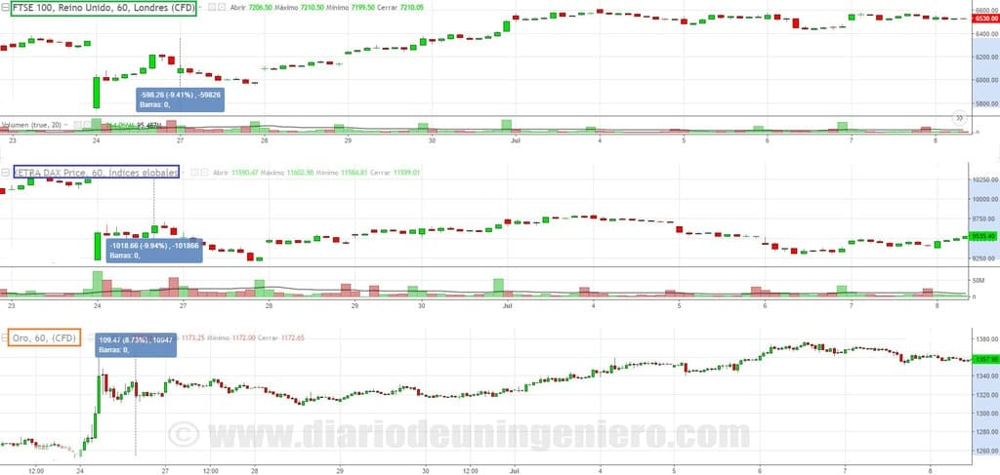

Este año ha sido uno de los años con más acontecimientos que podían influir en la bolsa de los últimos 10 años.
Por un lado comenzamos con una crisis abismal en el precio del petróleo que hizo que los principales índices europeos bajaran una media de 15 % debido a la sobreoferta existente.
USA fue de las que más bajo llegando el SP500 a niveles de 2014, bajando a 1800 sin embargo cuando se dio la vuelta y se tocó suelo USA reacciono mucho mejor a Europa en general.
Por otro lado el año no se había recuperado del todo del fin del crecimiento chino que en Agosto del 2015 hizo temblar los parques de medio mundo.
Al volver al cauce y empezar el petróleo a dar signos de agotamiento vendedor USA retomaría los niveles anteriores alcanzando su índice de referencia los 2000 puntos.
Europa estaba pendiente del referéndum en Inglaterra, del cual lleva pendiente siendo sinceros más de un año.
Según avanzaba el tiempo se iba tomando la idea de que los partidarios de continuar en la unión europea ganarían por un pequeño margen pero que estaba asegurada.
El mercado reaccionaría favorable en este sentido y las bolsas subirían con fuerza.
Sin embargo, el resultado estuvo muy lejos de los esperados, ganando los partidarios del Brexit por un estrecho margen del 2%.
Esto lastraría las bolsas durante 1 mes hasta que se llegó a aceptar la situación.
Entre el día del conocimiento de resultados y los dos siguientes días los principales índices europeos bajarían un 15% llegando a incluso un valor inferior al que se sufrió tras la crisis de Enero.

Los más afectados serían las entidades financieras y las aerolíneas que no se han llegado a recuperar todavía.
Posteriormente del Brexit en verano se producirían las segundas elecciones españolas que darían como claro vencedor a Mariano Rajoy.
Sin embargo el recuento de escaños no le daría la mayoría suficiente para poder gobernar y matemáticamente dependería básicamente del adversario histórico que tras no poder llegar al poder por la negativa de Podemos.
Un partido nuevo español que representa al sector español más afectado por la crisis de estos años.
Esta situación dejaba un sabor agridulce en los mercados, ya que si bien se conseguía que un partido pro-mercado consiguiese un valor aceptable no podría ser envestido y volvía la inestabilidad.
Esta vez la situación apenas se reflejó en la bolsa ya que este resultado estaba descontado.
Tras una bandada de resultados políticos y decisiones que no eran buenas para los mercados los índices estuvieron laterales ya a la espera de las elecciones americanas y entonces llego lo que algunos denominaron como el Trumpazo.
Trump gano las elecciones contra todo pronóstico.
A pesar de que aquí en Europa se había descontado un resultado favorable a Clinton en Estados Unidos las principales empresas estaban divididas en torno a los dos candidatos.
En USA se inició un rally entonces que todavía no ha terminado llegando los índices a máximos históricos, mientras en Europa se han recuperado los niveles del inicio del año.
En el siguiente gráfico se aprecian los principales índices americanos tras la victoria de Donald Trump.

Y sobre todo en España desde que la abstención del PSOE hiciera que España tuviera presidente y gozara de cierta estabilidad.
El día de las elecciones en Estados Unidos, hubo un vaivén muy grande en todos los índices llegando el de volatilidad a un gran volumen solo rebasado por el Brexit como se ve en el siguiente gráfico :

Éste es un fenómeno que sin duda va a poder marcar el transcurso de la economía, ya que mientras las elecciones de USA solo tienen una duración de 4 años el Brexit puede ser un cambio histórico sin una posible reversión.
Recordemos también que tras las elecciones de USA no se tardó por parte del partido perdedor en dar el apoyo a Trump e intentar rebajar la tensión por el bien del país.
Cosa que en España es impensable aunque en este caso el PSOE ha sabido llevar a la perfección.
Así mismo Trump rebajaría su tono y mensaje y se retractaría de muchas las medidas polémicas que quería realizar.
Lo que más podía pesar en el mercado era el aviso de Trump de cambiar el rumbo de libre mercado a un estado proteccionista muy parecido a los partidos populistas que pululan por Europa en los últimos tiempos.
Partidos tales como Podemos o el Frente Nacional o el UKIP inglés o el movimiento Cinco Estrellas italiano.
Si bien todos los nombramientos que ha realizado Trump hacen descartar esta opción.
Lo único que se reforzara el mercado interno y se realizaran múltiples inversiones para relanzar la economía estadounidense provenientes del sector industrial.
Tras las elecciones americanas llegarían dos citas importantes como fueron el referéndum italiano y la reunión de la FED.
Todo fue según lo esperado y no se produjo ningún cambio inesperado en el mercado.
Tras el rally de navidad que termino el día 15 de Diciembre, ha vuelto la calma en los mercados donde el Dow Jones ha consolidado el nivel corrigiendo desde los casi 20k puntos a 19.8k.
El DAX por su parte ha consolidado el nivel de los 11.500 y el Ibex los 9350. Sirviendo de soportes para futuros crecimientos.
Siendo optimista estimo que el año que viene el IBEX podrá estar terminando en 11.500 puntos al acabar 2017.
Habrá una subida inicial hasta marzo- abril que lo situará en los 10.800, para después corregir y volver a los 9500.
En Octubre del año se volverán a los valores de crecida y se terminara el año en los valores citados de los 11.500.
Los valores más agraciados del año que viene pronóstico que serán los de las materias primas ligadas a la construcción, constructoras, sector industrial y bancos.
Las más perjudicadas en cambio serán las "utilities", grandes compañías eléctricas, y las todo el sector de las TICS.
Aun así no creo que vayan a bajar de valor pero la diferencia entre estos sectores será muy grande.
A parte otras compañías que seguirán beneficiándose del auge de la economía global serán las aerolíneas y sector del turismo, cadenas hoteleras principalmente.
Si comparamos este año con respecto a otros años veremos que ha sido un año de transición entre una etapa de rebote.
Desde 2008 que nos llegó a alcanzar los 12.000 puntos el año pasado y una etapa madura de crecimiento que es el ciclo que vamos a ver posiblemente en 2018.
En este año se ha empezado a materializar en los Estados Unidos con unas tasas de desempleo muy bajas y el comienzo de la subida de salarios y tipos de interés.
En Europa siempre vamos rezagados con respecto a Estados Unidos y es por ello que descarto totalmente una subida de tipos hasta el primer trimestre de 2018 o finales de este.
España va a la cabeza en Europa en crecimiento si bien es cierto de que fuimos los más afectados con la crisis y más que un crecimiento es una recuperación de niveles previos.
Con el actual escenario de una estabilidad política y una lenta recuperación del mercado de trabajo, y debido a nuestras envidiables condiciones climatológicas las expectativas de crecimiento son muy altas.
Sin embargo quedan muchas medidas por hacer sobre todo en el campo de los autónomos para relanzar la economía.
En Estados Unidos parece que ha llegado el fin de las políticas expansivas y el nuevo presidente de los Estados Unidos va a comenzar unas políticas expansivas que van a traer nuevos proyectos a su país.
Un aumento de puestos de trabajo en el sector industrial y el desembarco de muchas empresas a suelo americano entre otras españolas.
Si bien es cierto que tratara de que el mayor peso caiga en empresas estadounidenses.
En Asia por el contrario el fin de las políticas expansivas llego el año pasado y se notó en el precio de las materias primas que llegaron a niveles no vistos en una década.
Esto junto a la bajada de los precios del petróleo origino una crisis a escala global.
China está ahora mismo en una etapa de madurez de su economía centrando en potenciar sus empresas tecnológicas y en la calidad de sus productos más que en la cantidad.
La clase media china ha aumentado exponencialmente pasando de 100 millones de chinos a principios de este siglo a cerca de 600 millones que hay actualmente, la mitad de la población.
India en cambio continúa en una etapa expansiva con una gran inflación y un crecimiento anual superior al 7%.
Esto puede que continúe así una década más ya que tienen un retraso y una desigualdad significativa.
No solo por clases sociales sino también por zonas del país ya que hay núcleos donde existe una pobreza extrema y otros donde reina la clase media.
Es por ello que la renta variable India tiene todavía mucho potencial.
La renta variable de otros países emergentes como Sudamérica ha sufrido un varapalo enorme por la inestabilidad política de algunos países como Brasil y Venezuela y la crisis de las materias primas.
Estos países los años de bonanza no han gestionado bien su capital y en vez de ponerlo para crear un mercado competitivo lo han malgastado en muchos aspectos y también teniendo en cuenta la alta corrupción política que sufren.
Usando este sitio web aceptas nuestros Terminos y condiciones. Por favor Aceptar esto antes de usar el sitio web.
© 2016 - All Rights Reserved - Diseñada por Sergio López Martínez
El sitio se mantiene gracias a la publicidad, por favor Desactiva Adblock para seguir navegando
He desactivado Adblock![[Valid RSS]](https://www.feedvalidator.org/images/valid-rss-rogers.png "Validate my RSS feed")